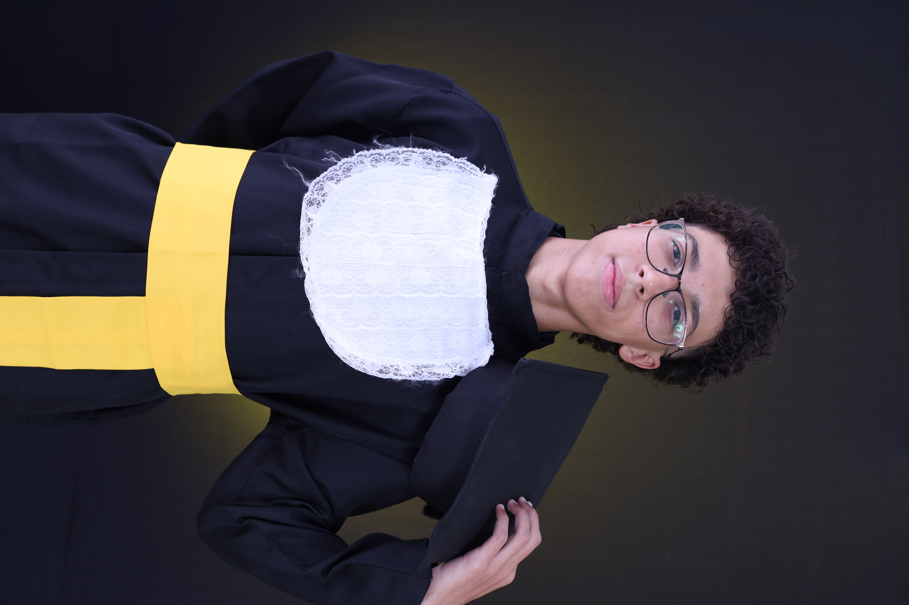

Meu nome é Daniel Borges, tenho 18 anos, nasci em Belo Horizonte, Minas Gerais, no ano de 2007. Cresci na cidade de Contagem, também em Minas Gerais, bem próxima da capital. Ao longo da minha vida, sempre me foi cobrado a disciplina, respeito e integridade, valores os quais considero indispensáveis em qualquer relação.
Durante a minha infância, sempre me pegavam desmontando brinquedos para entender como eles funcionavam, a curiosidade era algo que me definia. Em 2013, foi-me introduzido o famoso videogame, algo completamente novo, nunca havia visto nada parecido, e isso despertou muito meu interesse. A partir disso, mídias digitais passaram a ser algo de meu interesse, e, por consequência, saber como tudo funcionava. Criar um simples jogo passou a ser um sonho de infância, apesar de eu ser completamente leigo no assunto.
Em meados de 2020, com a pandemia, minha proximidade com o mundo digital aumentou exponencialmente. Com isso, o que era apenas uma atração de uma criança, virou um objetivo profissional, mas não se limitando a jogos, e sim a sites, bancos de dados e cybersegurança.
Frequento a escola desde 2010, onde ingressei em uma escola particular localizada no bairro onde eu moro, permaneci nessa mesma escola até o final do Ensino Fundamental. Tive um aprendizado de qualidade, e eu me destacava frequentemente, especialmente em matérias na área de exatas, como matemática e ciências. Além disso, gostava de ensinar matérias e ajudar colegas que possuíam dúvidas.
Em 2023, ingressei no Instituto Federal de Minas Gerais, onde fiz curso técnico em Informática integrado ao Ensino Médio, dando seguimento aos meus interesses. Foi uma etapa crucial em minha vida, onde aprendi a lidar com diversas situações que se assemelham com problemas da vida adulta.
Em 2026, após me formar no Ensino Médio, ingressei na Universidade Federal de Minas Gerais, na qual estou realizando curso de graduação em Ciência de Dados, aprofundando-me na área que possuo mais afinidade. E dando continuidade no processo para formação profissional.